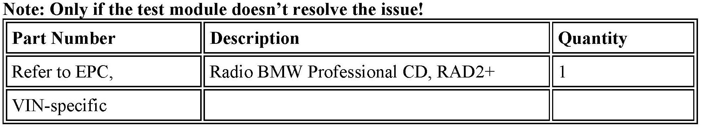
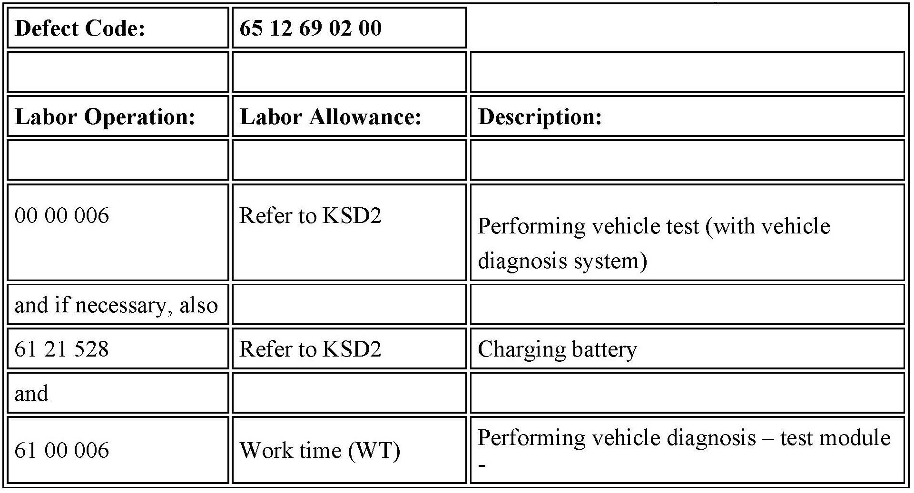
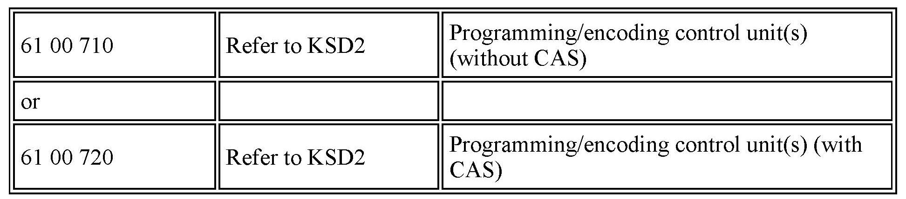
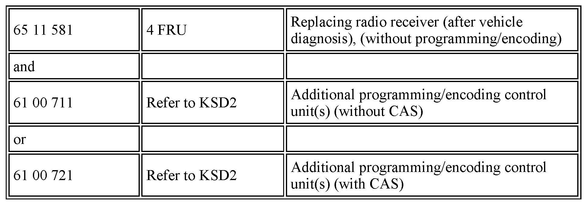

Audio System -Distorted RAD2+ Sound Output
SI B65 13 10Audio, Navigation, Monitors, Alarms, SRS
March 2013
Technical Service
This Service Information bulletin supersedes SI B65 13 10 dated July 2012.
[NEW] designates changes to this revision
SUBJECT
RAD2+: Distorted Audio Output in All Modes
MODEL
E82
E88
E89
E90
E91
E92
E93
[NEW] Produced from 9/2009 with option 663 (Radio Professional, RAD2+)
With or without:
Option 676 (Hi-Fi Loudspeaker System)
Option 677 (Professional Hi-Fi System)
Option 688 (Harman-Kardon Surround Sound)
Option 752 (Individual Audio System)
In all audio modes (radio, CD, AUX-In, etc.), the audio output is distorted. It is more noticeable with high bass and high audio volume settings.
There may also be an intermittent interference noise coming from the loudspeakers at low audio volume or when the radio is turned off.
CAUSE
Audio settings in the RAD2+ (radio professional)
[NEW] CORRECTION
1. Perform a vehicle test using the latest ISTA (Integrated Service Technical Application) diagnostic software.
Note:
When the ISTA system message displays: Battery voltage only "XX.XX" V. Please connect charger. Please note the displayed battery voltage reading in the repair order comments section.
2. Perform and complete the test plan(s) relevant for radio fault patterns.
3. If there are no fault codes stored relevant to radio and/or audio fault patterns, reprogram the vehicle using ISTA/P 2.49.0 or later.
New integration level: E89x-13-07-500 or higher
Note that ISTA/P will automatically reprogram and code all programmable control modules that do not have the latest software.
For information on programming and coding with ISTA/P, refer to CenterNet / Aftersales Portal / Service / Workshop Technology / Vehicle Programming.
4. If programming doesn't resolve the issue, replace the RAD2+ radio and reprogram the
vehicle using ISTA/P 2.49.0 or later.
New integration level: E89x-13-07-500 or higher
Note that ISTA/P will automatically reprogram and code all programmable control modules that do not have the latest software.
For information on programming and coding with ISTA/P, refer to CenterNet / Aftersales Portal / Service / Workshop Technology / Vehicle Programming.

[NEW] PARTS INFORMATION

[NEW] WARRANTY INFORMATION
Covered under the terms of the BMW New Vehicle/SAV Limited Warranty.
Labor operation code 00 00 006 is a Main labor operation. If you are using a Main labor code for another repair, use the Plus code labor operation 00 00 556 instead.
Even though work time labor operation code 61 00 006 ends in "006," it is not considered a Main labor operation.
Work time (WT) labor operation 61 00 006 requires an individual punch time.

Only, if necessary

Only if a parts replacement is necessary
Labor operation code 00 00 006 is a Main labor operation. If you are using a Main labor code for another repair, use the Plus code labor operation 00 00 556 instead.
Refer to KSD2 for the corresponding flat rate unit (FRU) allowance. Enter the Chassis Number, which consists of the last 7 digits of the Vehicle Identification Number (VIN). Click on the "Search" button, and then enter the applicable flat rate labor operation in the FR code field.
If a control module was working properly and/or had no related faults stored prior to vehicle programming and it fails to program correctly or requires initialization this additional work must be claimed with separate labor operations under the defect code listed above refer to KSD2.
Other Repairs
If performing other ISTA diagnostics and related test plans results with eligible and covered work, claim this work with the applicable defect code and labor operations listed in KSD2.